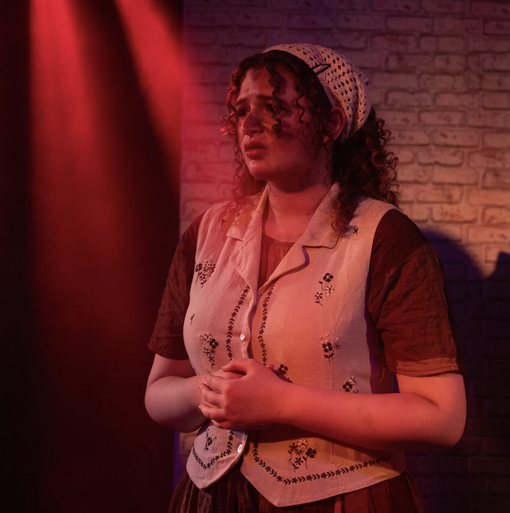
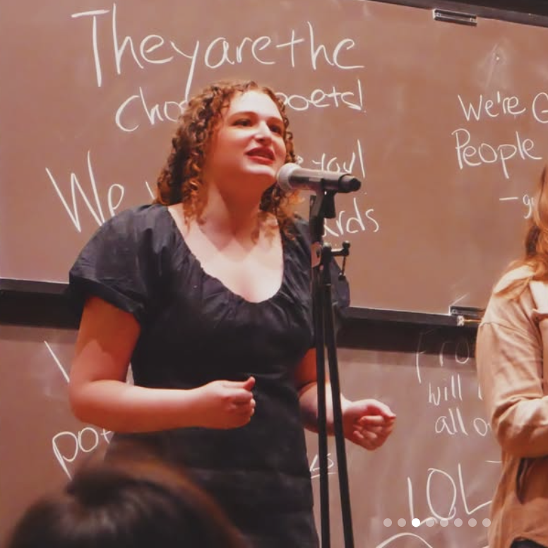
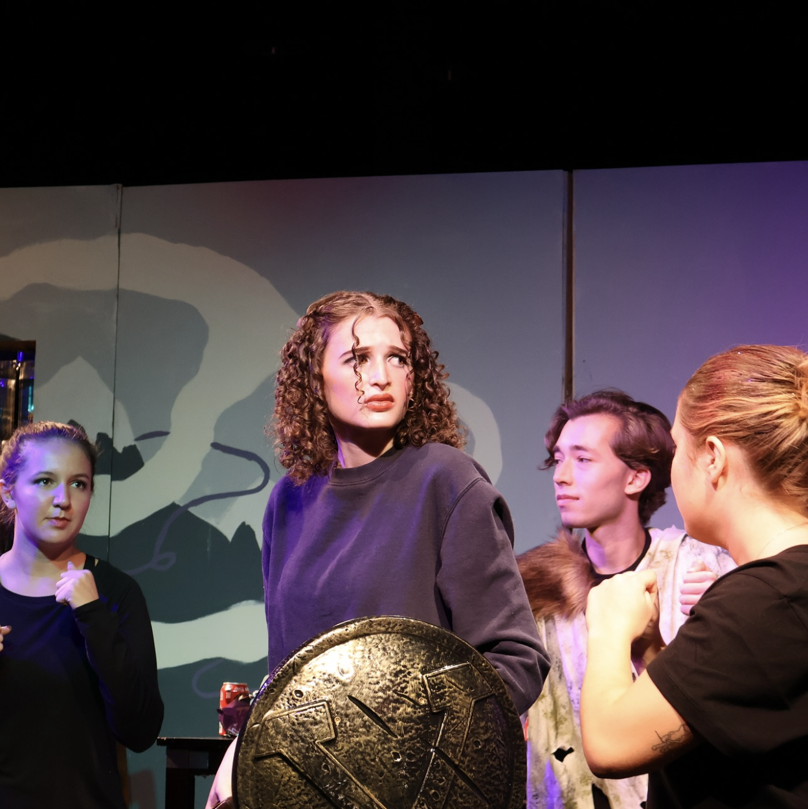
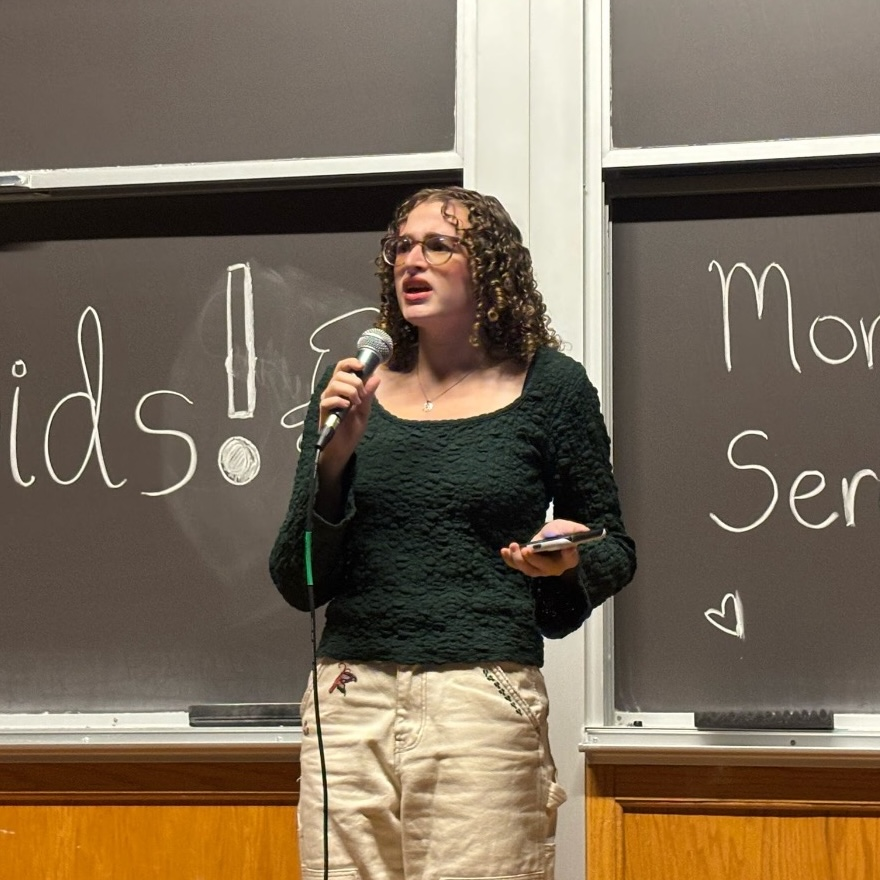
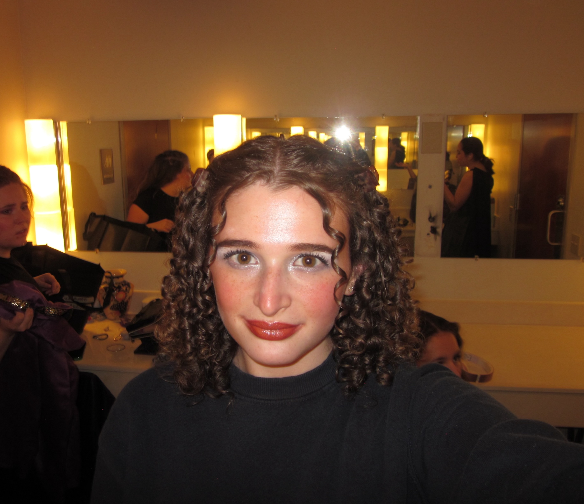

Anna Schwartz is twenty year old drama and writing major at Washington University in St. Louis from Atlanta, Georgia. In her freetime, she performs with the student theatre group Cast n' Crew, slam poetry group WUSlam, and designs for the WashU Hillel scoial media accounts.
In this interview, we discuss how creativite expression has shaped her person and career choices, how she practices art, and some of her projects and experience.
FROM MARCH 27, 2026 - EDITIED APRIL 5, 2026
1. do you consider yourself a creative person?
Yes, I think I've always been into artistic stuff, whether that's visual arts, I was really into when I was younger. Right now, performing[1] and writing are where it's at for me.
2. what drew you to arts you're involved in, initially visual arts and now, performing?
I think visual art was something I was good at for a ten year old, so it made me feel good about myself. I was like, "Wow, I can do this well!" As for performance, I think my mom orginially put me in theatre to help with my public speaking and confidence, but that was when I was six years old, and I just kind of stuck with it. I played the violin for six years, and that didn't stick.
My sister[2] also did theatre, and played viola, and she ended up studying music. And I'm studying theatre. But I think it's just something that always made me happy, and when I got to the point where I had to choose between STEM, and arts, and humanities, I just thought about what would I be unhappy not doing, instead of what would I be happy doing. I'm okay to not be in a lab everyday, but if I wasn't able to perform at all, I'd be upset.
3. do you think the people in your life have been a significant influence on you being a creative person?
My parents, if they didn't encourage/allow me to pursue creative careers, then I would've started off with different internships, different programs, and different summer things. So I think the fact they really let me do that was very influential. But also, it was always, "Academics come first."
4. how do you think your creative disciplines interact with each other? or, if they don't, how do you keep them separate?
Obviously writing and theatre interact in slam poetry, which is performance and writing, and playwriting, which is writing and theatre, which I tried. Freshman year of high school, I did a summer program[3], and I was debating between being a writer and being a performer/director. And I was like, "Wouldn't it be so convenient if I liked playwriting?" And I tried it, and I loved it. So that's a great way for things to intersect. It's all about storytelling for me. I like how much agency you get as a playwright.
5. what does your creative process look like? is it different for writing, versus art, versus theatre, or are they are kind of similar?
For poetry writing, it usually starts with a lot of brain dumping, and then going through and picking out what's good and finding a structure.
For playwriting, I do a lot of thinking and pondering about characters, and places, and outlines. I will usually write a couple of scenes that probably don't make it into the play, just to get more comfortable with the characters and how they sound.
For acting, I start by memorizing my lines and analyzing the script, and I try to memorize in monotone, so I can feel things out in the moment.
6. do you have any strategies you use when you get stuck?
I go back to my old stuff, and there's the phrase, "Kill your darlings." I have all my darlings buried in my google drive. So there's just a ton of stuff that I've written, or figured out that didn't fit into other projects. So if I'm really stuck, I go back and read through some of that, and then I get inspired by ideas I hadn't fully thought out. But also, if I'm taking a class[4], and they give me a prompt, that makes it way easier. I love a good prompt.
7. do you think being creative is important?
Yeah, I think imagination is important, I think creativity is important, especially with children or teenagers. I think it trains you how to be a problem solver, and how to look for ways out of things. Like, if you're going into math or science, you still need to be creative to find new methods and to innovate. I think it's one of the most important skills you can foster. Sometimes, children tend to be more creative than adults, because people don't take care of creativity. So I think doing arts throuhgout my childhood has really helped me with that, and other people have had similar experiences.
8. what's your favorite thing you've ever written, or done creatively?
Maybe The Common Room play[5]. Because I really liked that, and that was really reflective of my experiences. It was very much a capsule-of-this-year type piece. And doing that reading at Woodstock Arts[6] was so cool, because I got to work with a real director, and that was awesome. And I got to work with a dramaturg that helped me see things in the piece that I didn't know were there. And he talks about the mythology of the world that I've come up with, and I'm like, "I didn't do any of that on purpose, but thank you." So that was really cool to get to see people working with something I started with.
9. do you have any advice for anyone looking to be more creative in their life?
I would say one of the easiest ways to get into art is using it as an outlet. Just a way to be more comfortable with your feelings, and think through what you're feeling, would be to create something out of it. And it doesn't always need to be direct and confessional and lyric, but I feel like when I get overwhelmed, turning to art as an outlet for that stress is always effective.
END INTERVIEW